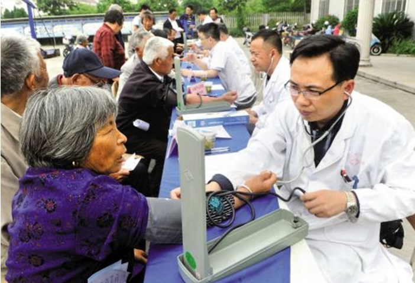
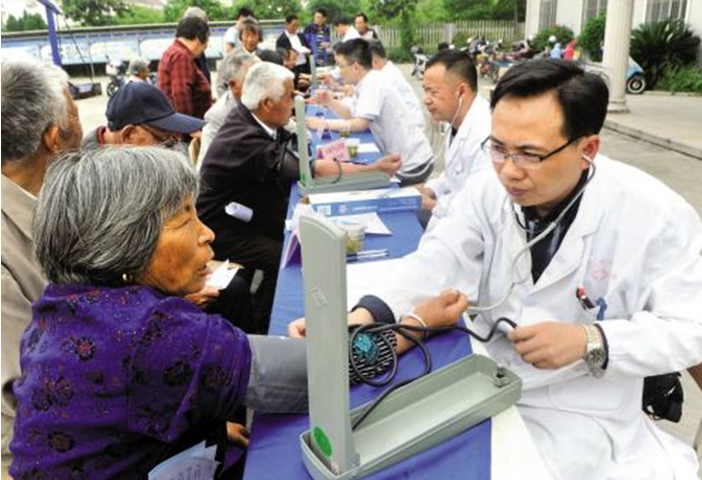

深圳市委办公厅到汕尾市汕尾市赤古村送医下乡
2018-4-15 赤古农产品
4月21日-22日，深圳市委办公厅机关党委专职副书记范伟华率深圳市卫计委（侨联）医学专家组近30人到汕尾市城区赤古村开展精准扶贫送医下乡活动，并建立了两市专家的交流平台。汕尾市委常委、市城区区委书记李庆新，市城区区委常委、副区长、深圳市驻市城区工作组组长范仕国，市城区副区长刘顺华，深圳对口帮扶汕尾指挥部社会民生组等领导陪同参加活动。

阅读2038赞投诉
2018-4-15 赤古农产品
4月21日-22日，深圳市委办公厅机关党委专职副书记范伟华率深圳市卫计委（侨联）医学专家组近30人到汕尾市城区赤古村开展精准扶贫送医下乡活动，并建立了两市专家的交流平台。汕尾市委常委、市城区区委书记李庆新，市城区区委常委、副区长、深圳市驻市城区工作组组长范仕国，市城区副区长刘顺华，深圳对口帮扶汕尾指挥部社会民生组等领导陪同参加活动。

阅读2038赞投诉